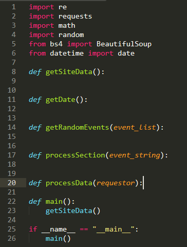
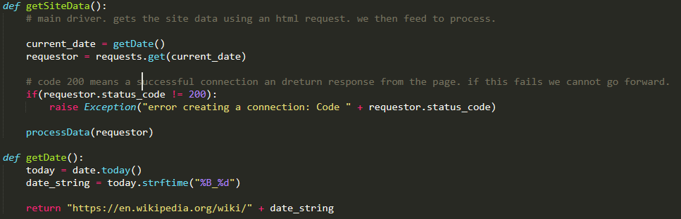

Welcome! Here we will learn how to create the wikipedia scraper found on the
todays info section of this website. Starting this project, we have a couple of goals
in mind. We want to learn more about BeautifulSoup and Requests modules, which are used
in the webscraping process. We want to learn more behind the structure of html pages and
automatisation that can be done there. Any self respecing computer scientist does not look
to create more work where less work works just as well. We also want to to tie this to startup.
From above we can pull the following broad questions
As we continue, these broad questions will be brokenb down with each sub-question
labeled 1.a, 2.b, etc.
Alright. Let us start with defining our overarching problem.
1.a What is web scraping?
Web Scraping is the act of extracting data from a site and then using that data
is some way. Most commonly, this extraction is of plain html elements, such as prices
text, or list elements, however one can also extract metadata from pages.
This leads us to our next question. We've defined web scraping, but this has left us with another
topic to define. This is a very common occurance in cs, when we peel back a layer of abstraction, we get more questions
1.b What structure is involved in a web page?
Below is an snipit of the html for wikipedia's December 21 page. This is the juicy information.
html, along with javascript and css, form the basis for every website on the internet. html
provides the structure and content, css the layour and pretification, and javascript interactivity
and functionality. The easisiest way to look at html is to inspect element. We are going to focus
on the li tags, these are the lists of events per era.
All of that is great, and a lot of information. If we are to do anything with this we must get it into
our program which, well, that's a good question. How does tsome program that lives on your
computer and/or github get info from a website that may be hosted on a server halfway across the world?
2/3.a How do we get this info to our program?
This is where requests come in. http is a lovely little thing we take for granted and most cs students just overlook, but
using the requests module, which is built on top of older http libraries, we can get all the info we need. The request module
is so popular, there is currently a push to get it included in python by default. We can create a request object that gets
the page for the current date. We'll come back to the question of the date later, but for now let's say it is hardcoded as
December_13.
We do not (sadly) need to get into the weeds on how http works, but here is a simple explanation.
http allows us to communicate requests and responces between two places, call one a client, who requests, and a server,
who responds. When we connect to some website, that site is really hosted somewhere on some webserver,
and through TCP and IP (transport and internet layers) we get there and have a connection. Great. http
then allows for us to actually send a representation the current state of the site from the server to the client so we see
all the pretty text and images and all the rest. When we do this with the request module, we are sending a GET request
that will retrieve all the data aka html and css nonsense. Notably, we also want ensure the webpage we get is ok, so we check
for status code 200, the ok signal that servers send the client after a successful GET.
Now that we know it is possible to get this information and check that it is correct, then we can move to our design. It is imperitive to think about the design and structure of a program before starting. We think both about the problem itself and the structure behind the problem and we think about the structure of our solutions.
4.a What structurly do I expect to need in the code?
This is a large question, a shockingly large and important question. We know that a couple steps are needed. Broadly, get date, get data, parse data, and get events.
This gives us a rough idea of the intitial tasks we will need. With this, we now can begin coding. Here is our initial program.
Note the imports at the top. Of these, requests is needed for the http requests and bs4 from BeautifulSoup is needed for parsing
the html.

let's start with getSiteData(): first since this function is the entry point of our program. Firstly, we know we need to get
the current date, so call the getDate() function, and execute a request, afterwhich we check the response code. After this, we should
be good to process. The function getDate is fairly simple to implement as well.

Next in the pipeline is processData(requestor). Remember that knowing the structure of the website being scraped is imperative.
With this in mind, we have a really important question.